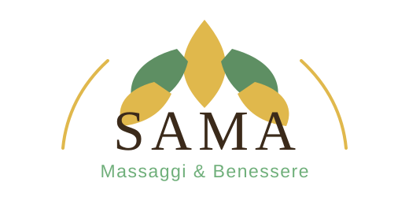

Relax Total Body
Un massaggio avvolgente su tutto il corpo, pensato per rallentare, sciogliere le tensioni della quotidianità e ritrovare una piacevole sensazione di calma e benessere.

SAMA · MASSAGGI & BENESSERE
Rituali e trattamenti dedicati al benessere del corpo, organizzati per aiutarti a trovare più facilmente ciò che cerchi.
RALLENTARE
Un massaggio avvolgente su tutto il corpo, pensato per rallentare, sciogliere le tensioni della quotidianità e ritrovare una piacevole sensazione di calma e benessere.
Un rituale rilassante che abbina manualità e pietre calde, per un’esperienza profonda, avvolgente e particolarmente piacevole nei momenti di stress.
LEGGEREZZA & MODELLAZIONE
Trattamento manuale mirato alle zone interessate dagli inestetismi della cellulite, con manovre pensate per lavorare sui tessuti e sulla sensazione di compattezza.
Un rituale corpo che combina applicazione del fango e trattamento manuale, dedicato a chi cerca una sensazione di leggerezza e una cura mirata degli inestetismi.
Manualità lente e delicate dedicate al drenaggio e alla sensazione di leggerezza, particolarmente indicate quando si percepiscono gonfiore e pesantezza.
Trattamento modellante eseguito con strumenti in legno di forme differenti, utilizzati con manualità ritmiche e mirate sulle diverse zone del corpo.
Trattamento eseguito con un sistema a vacuum controllato che mantiene un’aspirazione costante mentre il manipolo scorre sulle zone interessate. In ambito corpo e modellazione viene utilizzato per lavorare in modo dinamico sui tessuti, contribuendo a una sensazione di leggerezza e a un aspetto più uniforme.
MOVIMENTO
Trattamento concentrato sulla schiena, dedicato alle aree più tese e affaticate e pensato per chi desidera un lavoro localizzato e deciso.
Trattamento con vacuum controllato applicato in modo dinamico alle aree muscolari. In ambito sportivo viene utilizzato prima o dopo l’attività fisica per lavorare localmente sui tessuti e favorire una sensazione di distensione e recupero muscolare.
Applicazione localizzata di tape elastico, proposta come servizio specifico in base alla zona e all’esigenza della persona.
RITUALI VISO
Rituale manuale dedicato al viso, caratterizzato da gesti ritmici e precisi per regalare una sensazione di distensione, cura e luminosità.
UN TEMPO DEDICATO
Un percorso pensato per accompagnare la donna prima e dopo la nascita. In gravidanza viene eseguito dalla 12ª settimana in poi, con manualità dolci e posizioni confortevoli adattate al momento. Nel post parto il lavoro può essere orientato alla sensazione di leggerezza e al rimodellamento del corpo. È possibile costruire anche un percorso che unisca fase pre e post parto, per dedicarsi uno spazio di benessere in entrambi i momenti.
In gravidanza: dalla 12ª settimana in poi.
VUOI PRENOTARE?
Per prenotare un massaggio, puoi chiamarmi oppure scrivermi su WhatsApp.
PIÙ POSSIBILITÀ
Puoi creare pacchetti personalizzati, scegliere un buono regalo oppure chiedere informazioni sugli sconti dedicati agli acquisti multipli.